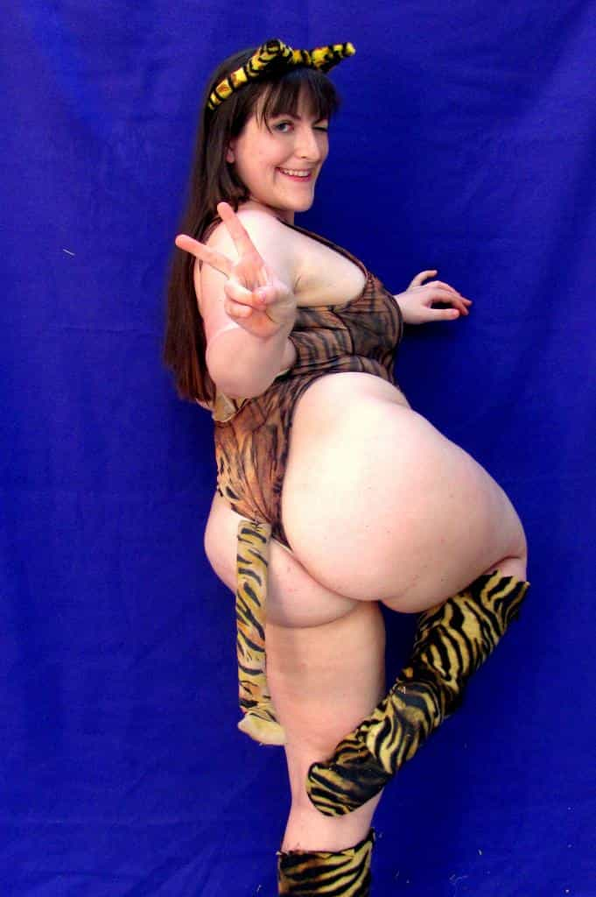
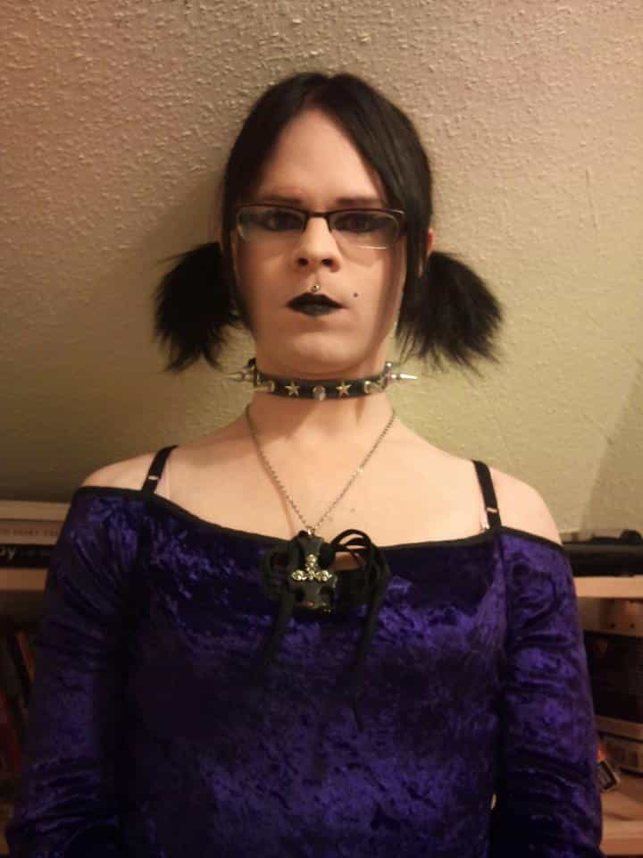
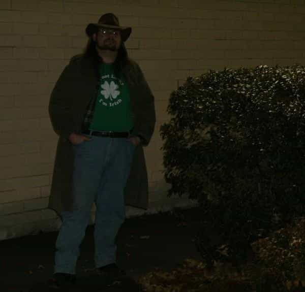
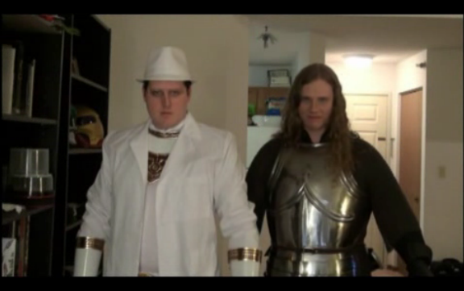
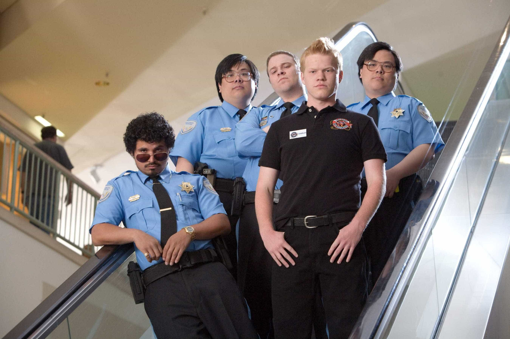

Do you remember watching Dragon Ball Z as a young teenager? That is a scenario that many of us have gone through our youth. We would watch stylized cartoons from Japan as young children. Many of those children grew up and still wanted to enjoy cartoons of that nature as an adult. Some of those people decided to make conventions based on this premise (take a comic book convention but with the premise of Asiatic pop culture). These conventions aren’t necessarily about the cartoons but the subcultures that it spawns.
The average convention goer is most likely the reverse of what you expect from a nerd convention. The skinny lanky nerd and his buddy the obese manchild are still going to conventions. They will be there giving presentations, but a whole new breed of people is in to anime.
This new breed is young attractive women with mental issues. Women have jumped on to the anime bandwagon. Most of them joined because they’re the second tier of attractive women. They can’t compete with the front runners because of a flaw or two (they might have the body but the nose is way too big). These women would be considered Bargain Bin to regular society. However, to anime loving nerds, these are the new 9’s and 10’s for the anime world. Women love it, because they have a ton of beta orbiters and some creepy omegas. They get to rule over and be the queens of anime conventions. I decoded the code for an alpha guy to go to these conventions and make that second string duchess bow down to your manliness.
Location
Not all anime conventions are made equally. The ones with the most participants usually have the better quality women. No chick is going to wear 5-inch heels and squeeze her ass in a corset for 50 neckbearded manchildren, but she will do it for 5,000 neckbeared manchildren. The smaller conventions attract the typical manchild and their female equivalent. I went to one of those small conventions and a dude in a dress was trying to hit on me. Go for the bigger conventions because the prettier girls will be there.
The next aspect of these conventions is lodging. Location is incredibly important for maximum efficiency. A hotel room that is a 10 minute walk or less is extremely preferable. In fact, if you want to, registering months before gets you the best deals and the best locations. Many conventions are host to college-like parties and having a bed nearby can be the difference of a bang or not. This is one aspect that you can’t skimp on at all. It’s easy to rationalize a fun night at the convention center with her vs taking a 40 minute drive back to your place.
Where to go
Most conventions on a bigger scale have a multitude of things to do. You can go play some imported SNES games or stay in some dark room watching VHS era fansubs. Most of it is actually counterproductive to getting a bang however. The places to go are not uniform as all anime conventions aren’t alike but I will list the do’s and don’ts. Specifically, stating the reason in a small sentence for those new to the anime convention game.
Don’t…
-
Most panels. These are mostly garbage and highly misleading. Most of the panels are run by beta’s and transgender freaks. Some of them include buying body pillows and omega sex toys. Others include LGBT representation.
-
Video game room. No quality ladies in there whatsoever. Also, the body odor is worse than a century old carcass.
-
Burlesque and adult-themed shows. Most of these are populated by unattractive and disgusting women. You can’t call them out on it because of the “harassment” policies made by white knights for anime conventions. Spend your time somewhere else.
-
Video rooms. Mostly filled with obese neckbeards and mangina white knights. There are some exceptions but it’s not worth the effort.
Do’s…
-
Dealers Room. This is a must. Imagine a place where you can day game all you want. Women are known to spend big bucks here. So they spend a lot of time in the dealers room. This is the venue to day game.
-
Events focusing on Lolita. Lolita is a sub culture of Japanese fashion relating to a mixture of British Victorian fashion and Japanese fashion. Most women in this subculture are thin because Japanese companies don’t cater to landwhales. These clothes are also extremely expensive usually meaning that these women have a rich daddy or a male sponsor. This combine with the fact that most of these women are more likely to have a personality disorder other than autism. If a woman is in to this culture she must keep thin and must be in to looking good. A great requisition for a bang.
-
Raves. Imagine a nightclub filled with almost all betas and at least 20 percent of the women there are bangable. This is nightclub game for toddlers. The sharks of a normal nightclub are replaced by clown fish. Just make sure to card the girl because many under 18’s love to get an older man from these sorts of events.
You’re at the convention center and you notice scantily clad women in tight clothing. You think they might be hired guns to market body pillows. You don’t know what to say or act. This is a common scenario for people going to game at conventions of that sort. Instead of spending 3000-5000 words writing a Tolkien length guide on this, I will write about the personalities that go to anime conventions and their backgrounds.
Types of females
Cosplay Girl
These women are dressed up as animated characters out in public. Most of them spend hundreds of hours to get the details down right. They also have to make sure their diet is right and everything matches. This type of woman is slightly smarter than the average American bar-fly. She can talk about more complicated subjects, but it comes at a price. There is a high chance that an attractive women walking around half naked at a convention center is mentally ill. I can ascertain that a lot of the famous cosplayers have personality disorders like borderline and narcissisism. Generally this is noticeable through things like cut marks, daddy issues, eating disorders and a lot of them are in to hard drugs. These “nerd” girls have the same problems as the average American girl. They are just slightly more intelligent and have lower self-esteem.
Game Tips: These women are constantly getting hit on by omega males. If you want to get her attention, ask for a photo. Don’t hover-hand and have some witty banter. These chicks can appreciate alpha behavior. They’re in a den of beta and omega males. A reasonably sane attractive man who takes care of himself and doesn’t have mental disorders will do well. Just remember to have a separation plan. These chicks will do something rash if they perceived being wronged.
Landwhale

These are the main species of women at anime conventions. They’re the thirstiest women in existence. These women require no game whatsoever but doing fat chicks lowers your reputation a lot if you want to be with the skinnier hotter cosplay women. You need to not let their advances succeed. The attractive girls will think something is mentally wrong with you if you slept with a hippo. Also, note that these are the chicks who publicly complain about “sexual harassment” because only creepy ugly men would give them the time of day. Even at the anime conventions themselves.
Game Tips: If you’re enough of a degenerate to have sex with a landwhale from an anime convention, wrap it up. They are not the types to take care of their innards including the part you want access to. Vagisil and antibiotic’s aren’t a miracle cure for jumping in to the garbage dump of a vagina.
Crossplay

These aren’t women at all but I will tag them as such just because this is the type of degeneracy you will see at anime conventions. Many in the anime community allow transgendered freaks to parade around as women. Some of these people even go as far as try to pretend to be female anime characters. The anime community tends to say they’re more open minded, but if you call out a freak in a dress, expect all the neckbeards, white knights and fat chicks to explode with anger. All you need to do is say no and go on to the next.
Game Tips: ROK isn’t a homosexual blog. Go to Jezebel, Slate, or The Atlantic if you want tips on how to sleep with men.
Types of men
Fat Neckbeards

These are the mostly stereotyped males who go to an anime convention. They’re fat, usually not into hygiene and have a multitude of social problems. Generally, these men will only offend through the olfactory gland. I can’t state enough how smelly the overweight neckbeards are at anime clubs. It is probably illegal under the Geneva Convention to allow these men in the same room as POWS. These men are also white knights but aren’t of the active kind. They just want to eat their fried foods and stock up on body pillows. Compared to all the types of men at anime conventions, these are the most benign.
White Knights

They’re quite similar to the neckbeard but more virulent. The white knight is fat but not as morbidly obese as the neckbeard. The neckbeard wants to sit in the videogame or video room most of the convention. The white knight has more energy to walk around. They will beta orbit the hottie even if she publicly calls them losers in front of their face. White knights and ugly fat chicks are the ones to be on guard of. They will do anything to stop a player from scoring, even by spreading horrendous false rumors. You may have compassion for the fat neckbeard, but I would give none whatsoever for white knights who want to impede your goals. They also tend to smell but that’s the least offensive thing about them.
Con Security/Con Staff

Con security/staff is a cheap excuse for the convention community not to hire actual staff. These are white knights with power. While you’re trying to score pussy based on game, these men tend to try to use their miniscule authority to try to score. If they can’t score, they will use any method to white knight possible, including following around the hot cosplayers trying to show you their authority. As a person who has known con security, these people are mostly dimwits who shouldn’t hold any power at all. I’m not saying all people are bad on this position but you really have to keep an eye on them. These people will use their wraith to score pussy. These are the ultimate Machiavellianist in existence. Some are chasing for the pussy and the other to white-knight. A hellish combo.
Going back home
The convention ended and you’re on your way back. You were able to get some notches but feminists have taken notice. They are writing articles like this about “consent”. The undesirables of society (fat chicks, manchildren, ugly women) are trying to keep anime conventions in the domain of blue pillers. Anime conventions will always try to shut us redpillers out but if we start to invade, and remain stealth about it, they can’t do anything. I hope I see more members of ROK at anime conventions. Cosplay chicks are sick of betas and need some alpha’s to come to the conventions and satisfy their sexual needs.


{kind=link}
{kind=link}
{kind=link}
{kind=link}
{kind=link}